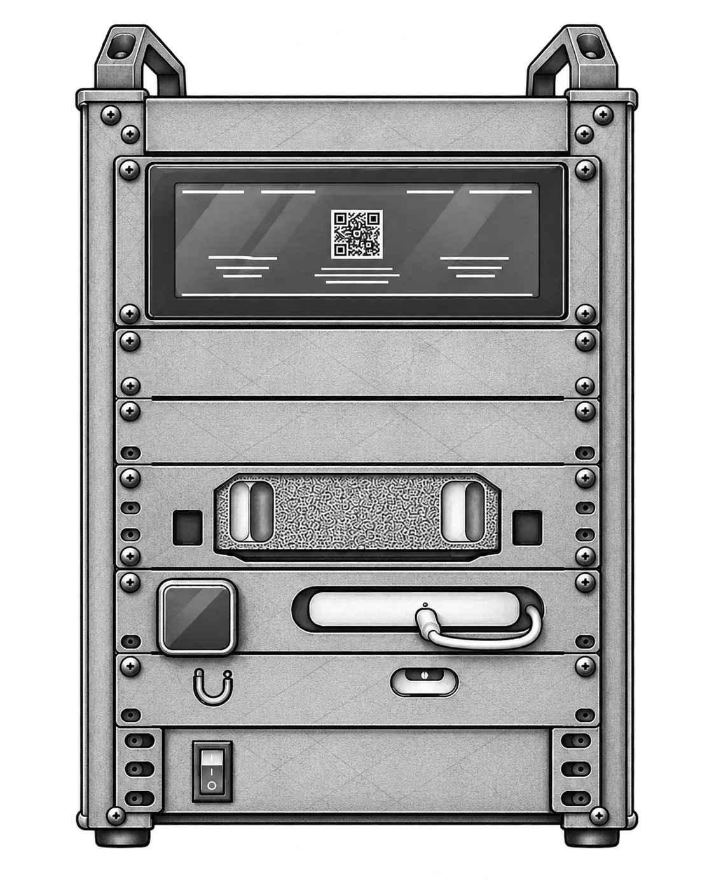
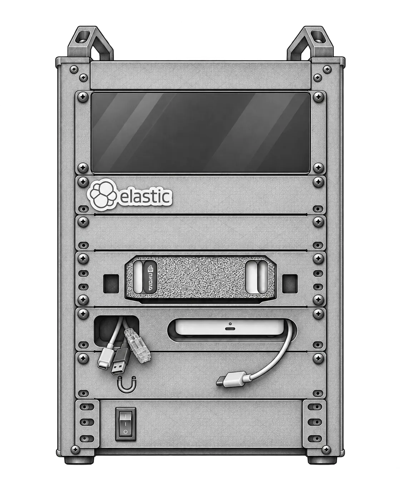
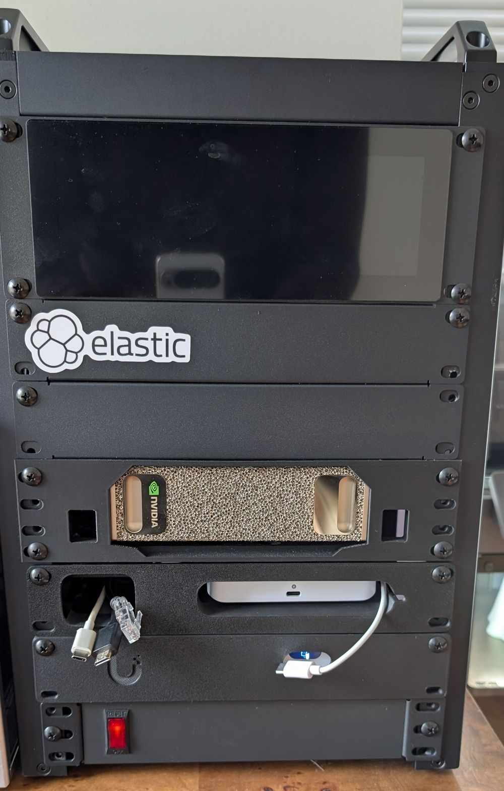
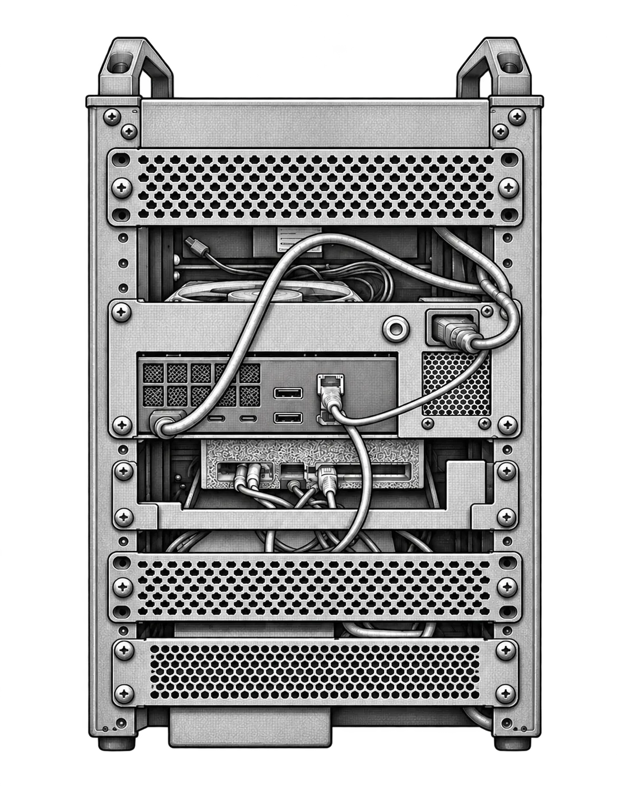
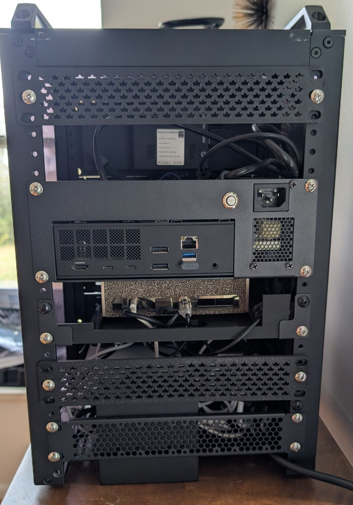
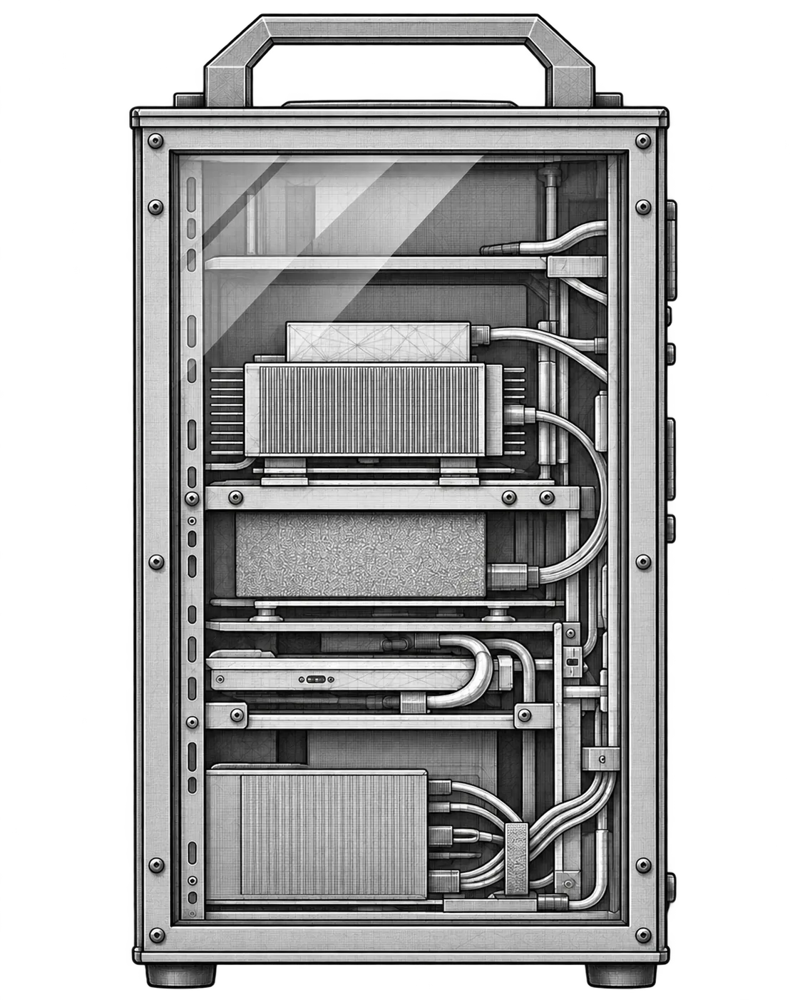
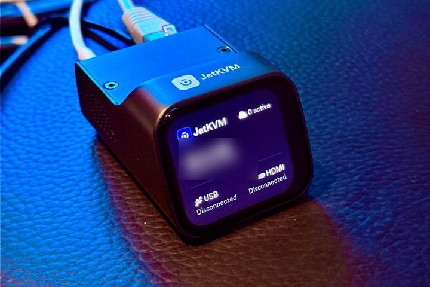
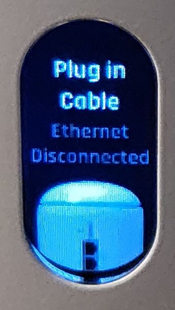

Lift the kit out, seat the JetKVM, plug in the cables, switch on master power and join the kit network. Then reverse it to pack down. Tap any step to see exactly where each cable goes on the drawings.
Status as of 13 Nov 2026Steps from the kit leadComponent map, confirm on your kitIllustrations. Not to scale.

12345678
Front view · Set up · Illustration. Not to scale.
Front view · Set up: legend
#
Part
F1
Carry handles on top
F2
Touchscreen panel, 2U
F3
Blank panels covering the Framework Desktop
F4
DGX Spark on its 10 in shelf
F5
JetKVM on the front face
F6
UniFi Express 7, white unit with cable
F7
Switch Flex Mini, small white unit
F8
PDU master power switch
Component map, confirm on your kit.

123456789101112
Front view · Packed · Illustration. Not to scale.
Front view · Packed: legend
#
Part
K1
Carry handles on top
K2
Touchscreen, off in transport
K3
Elastic sticker under the touchscreen
K4
Blank panels covering the Framework Desktop
K5
DGX Spark, NVIDIA logo on its face
K6
Empty JetKVM bay
K7
USB-C lead hanging from the bay
K8
USB-A lead hanging from the bay
K9
RJ45 Ethernet lead hanging from the bay
K10
UniFi Express 7
K11
UniFi USB-C power lead, unplugged and hanging
K12
PDU master power switch
Component map, confirm on your kit.

123456789
Front view · Photo of the kit · Photo of the kit, 13 Nov 2026
Front view · Photo of the kit: legend
#
Part
FP1
Carry handles on top
FP2
Touchscreen panel
FP3
Elastic sticker under the touchscreen
FP4
Blank panels covering the Framework Desktop
FP5
DGX Spark, NVIDIA logo on its face
FP6
JetKVM bay with its three leads
FP7
UniFi Express 7
FP8
Switch Flex Mini, blue status LED by its USB-C lead
FP9
PDU rocker switch, glows red when on
Component map, confirm on your kit.

123456789
Back view · Illustration · Illustration. Not to scale.
Back view · Illustration: legend
#
Part
B1
Top metal grate (vent panel)
B2
Framework HDMI port, leftmost on the rear I/O plate
B3
Framework USB Type-A ports
B4
Framework Ethernet (RJ45) port
B5
Framework PSU: IEC inlet and power button
B6
DGX Spark rear ports and cables
B7
Lower metal grates (vent panels)
B8
Bottom unit (PDU per the front view)
B9
Black mains cable exit, rear bottom right
Component map, confirm on your kit.

12345678
Back view · Photo of the kit · Photo of the kit, 13 Nov 2026
Back view · Photo of the kit: legend
#
Part
BP1
Top metal grate
BP2
Framework HDMI port, leftmost, labelled HDMI
BP3
Framework USB-A ports
BP4
Framework Ethernet (RJ45) port
BP5
Framework PSU IEC inlet
BP6
DGX Spark rear ports
BP7
Lower metal grates
BP8
Black mains cable exit, rear bottom right
Component map, confirm on your kit.

123456789
Side view · Illustration · Illustration. Not to scale.
Side view · Illustration: legend
#
Part
S1
Handle (lift point)
S2
Top shelf, behind the touchscreen
S3
Finned unit: Framework Desktop
S4
Metal-foam unit: DGX Spark
S5
Network gear shelf
S6
Bottom finned unit (PDU per the front view)
S7
Cable run up the rear post
S8
Glass side panel
S9
Rear face with the grate (lift point)
Component map, confirm on your kit.
01 · What comes out of the case
What comes out of the case. And what stays in the kit.
Tick Out as you unpack and Back in as you stow. The JetKVM leads and the UniFi power lead stay in the kit and only change state. Tags show the source: Kit lead (the kit lead's steps), Kit photo (photos of 13 Nov 2026), Confirm on kit (likely but not recorded).
Item and where it connects
Out
Back in
PDU power cable (long, black)Kit lead Exits the kit at the rear bottom right; plug end to a wall outlet
JetKVM unitKit photo Lifted out of its bay on the front face for transport
JetKVM leads: USB-C, USB-A, RJ45 EthernetKit photo Stay in the kit, hanging in the empty bay. Tuck them in, do not pull them out
UniFi Express 7 USB-C power lead (white)Kit photo Stays in the kit, unplugged from the UniFi and hanging to the lower row
Touchscreen HDMI cableKit lead Touchscreen to the Framework HDMI port (rear, leftmost)
Touchscreen USB Type-A cableKit lead Touchscreen to a Framework USB Type-A port (rear)
Framework Ethernet cableKit lead Framework RJ45 (rear) to
Presenter iPad or laptop and its chargerConfirm on kit Joins Wi-Fi DDIL
Wi-Fi passphrase cardConfirm on kit Kept with the kit lead, not in the repo
02 · Out of the case to powered on
Out of the case. Seven steps to powered on.
Follow the steps in order. Tap a step to light its parts on the figure; the pink rings and labels show exactly where each cable goes. Blanks marked confirm on kit are not recorded anywhere yet: fill them in once and they are saved in this browser.
The kit sits face down in the Pelican case. Grip the handle on top of the kit with one hand and the metal grate on the back of the kit with the other. Lift the kit straight out and stand it upright on a flat, hard surface with the touchscreen facing you. The front now looks like the Packed view.
Keep the front face and the rear grates clear. The side view shows a solid glass side panel and the back view shows perforated grates, so air moves through the front and the rear. Do not lift by the touchscreen, the glass panel or a cable.
The kit stands upright and level, the touchscreen faces you, and nothing is caught on the case foam.
Take the long PDU power cable out of the case. Check that the Kit Master Power switch on the PDU is off. The black mains cable exits at the rear bottom right of the kit (from the kit photo, 13 Nov 2026). Plug its other end into a wall outlet.
Power
PDU, exit at the rear bottom righttoWall outlet
The cable reaches the outlet without strain. The kit stays dark because master power is still off.
In transport the JetKVM is out of its bay on the front face. Three leads hang from the empty bay: a USB-C lead, a USB-A lead and an RJ45 Ethernet lead. Take the JetKVM out of the case.
Three leads in the empty bay, matching the Packed view and the kit photo.
Connect the JetKVM on the front face of the kit: Ethernet, HDMI and USB-C power. Then seat it in its bay.
The bay also holds a USB-A lead that the kit lead's steps do not mention. Which lead carries HDMI, and what the USB-A lead connects to: Confirm on kit
Ethernet
RJ45 lead from the baytoJetKVM
USB-C power
USB-C lead from the baytoJetKVM
HDMI
The lead named in the blank abovetoJetKVM
The JetKVM sits in its bay with its leads seated, as in the Set up view. Its screen comes up after master power (step 6).

JetKVM standard screen. IP and MAC blurred; your IP will differ.
The white USB-C power lead of the UniFi Express 7 is unplugged for transport and hangs down to the lower row. Plug it back into the USB-C port in the middle of the UniFi Express 7.
USB-C power
White lead hanging to the lower rowtoUniFi Express 7 USB-C port
The lead loops from the UniFi down and back, as in the Set up view.
Connect the touchscreen to the back of the Framework PC with two cables: USB Type-A and HDMI. The HDMI carries the picture. The USB Type-A cable carries touch input; the kiosk launcher maps the touch device to the touchscreen output.
The HDMI port is the leftmost port on the rear I/O plate, labelled HDMI. To its right sit two USB-C ports, two USB-A ports, the RJ45 port, a blue USB-A port and an audio jack (from the kit photo, 13 Nov 2026). Use one of the two USB-A ports.
HDMI
TouchscreentoFramework HDMI (rear, leftmost)
USB Type-A
TouchscreentoFramework USB Type-A (rear)
Both plugs are seated at the Framework rear I/O and at the panel. The panel stays dark until master power is on.
The kiosk probes are simulated.demo/kiosk/src/lib/health.ts sets MOCK = true: each probe returns after a random delay and has a 5 % random chance of showing FAIL. A green board does not prove the services are up, and an occasional pink FAIL is noise. Use the checks in the kit configuration runbook for real status until MOCK is set to false.
Connect the Ethernet cable to the RJ45 port on the back of the Framework PC.
The network plan puts the Framework on switch port P2 Doc-only. Other end on this kit:
Ethernet
Framework RJ45 (rear)to
The RJ45 plug clicks into place. The link light comes on after master power is on.
Switch Kit Master Power on at the PDU. The rocker glows red when on (from the kit photo, 13 Nov 2026). Every device fed by the PDU receives power together. Watch the JetKVM come up and the boot sequence start on the touchscreen.
The indicator timeline below lists what each device shows. If a node does not start by itself: Confirm on kit
The rocker glows red, the JetKVM shows its standard screen, the UniFi display reads Plug in Cable, and the touchscreen starts its boot sequence. Follow the timeline below.
JetKVM standard screen. IP and MAC blurred; your IP will differ.

UniFi Express 7 with no WAN uplink. Expected on the kit.
Indicator lights and what you should see after master power
PDU master switch Kit photo
The rocker glows red when on (from the kit photo, 13 Nov 2026).
JetKVM Kit lead
Shows its standard screen: the JetKVM logo top left, "N active" sessions top right, the device IP address in large type with the MAC address below, and two status tiles at the bottom, USB and HDMI. The IP appears once Ethernet has a link. USB and HDMI read Disconnected until the Framework is up, then Connected. Your IP will differ from the photo.
JetKVM standard screen. IP and MAC blurred.
UniFi Express 7 Kit lead
The front display reads Plug in Cable / Ethernet Disconnected in white-blue text on a dark pill-shaped screen, with a blue icon below. The kit has no WAN uplink, so this is the expected state for DDIL operation. The kit network still runs. It is not a fault.
UniFi Express 7 display with no WAN uplink.
Switch Flex Mini Kit photo
A blue status LED is visible next to its USB-C power lead (from the kit photo, 13 Nov 2026). The network plan says the port LEDs initialise and a link light shows on each connected port. Port link light colour:
DGX Spark Confirm on kit
Boots; Ollama starts under systemd. Power indicator:
Framework Desktop Repo
Power indicator: . If the branding script (branding/deploy-splash.sh) was deployed on this kit, the touchscreen shows the GRUB menu over an Elastic splash for about 3 s (GRUB_TIMEOUT=3), then the Plymouth boot splash, theme "DDIL Vineyard Intelligence". No record shows the script ran on this kit.
Touchscreen: kiosk launch Repo
ddil-kiosk.service runs kiosk-launch.sh: it sets the 1280x400 mode on the touchscreen output, maps touch input, disables blanking, hides the cursor and opens Chromium in kiosk mode at http://localhost:3100/, served by ddil-kiosk-server.service.
Touchscreen: Boot Diagnostics Repo
A dark screen with a monospace log on the right: "booting sovereign-ai kernel...", an ASCII banner, "mounting airgapped service mesh...", "loading runtime registry... ok", "initializing service probes...", then a probe line and an [ OK ] or [FAIL] line per service, "all subsystems checked." and "kit ready · awaiting demo handoff...". The left panel lists six services: Elasticsearch (GPU), Elasticsearch (CPU), Ollama LLM, Ollama Embeddings, Demo Backend, Field Sensor Bus. Status dots: pulsing yellow while probing, teal with a glow for OK, pink with a glow for FAIL, dim white for not yet probed. The progress bar fills teal, or pink if any probe failed.
The kiosk probes are simulated.demo/kiosk/src/lib/health.ts sets MOCK = true: each probe returns after a random delay and has a 5 % random chance of showing FAIL. A green board does not prove the services are up, and an occasional pink FAIL is noise. Use the checks in the kit configuration runbook for real status until MOCK is set to false.
Touchscreen: Idle carousel Repo
About 2.2 s after "kit ready" the kiosk advances to Idle. Page 1, Branding: Elastic and DGX Spark identity either side of a QR code and the headline "Sovereign AI / Context Engineering Anywhere". Page 2, Diagnostics: hardware cards for the Framework and the DGX Spark. Swipe or use the page dots. Time from master power to Idle:
On the presenter iPad or laptop, join the Wi-Fi network DDIL, served by the UniFi gear in the kit.
Passphrase: . The passphrase is not stored in the repo. Do not write it into this guide if the guide leaves the kit.
The network plan document names the SSID DDIL-Demo Doc-only. The kit lead's name for it is DDIL.
The device joins DDIL and receives an address in 192.168.1.100-199 (DHCP range per the network plan). The UniFi display still reads Plug in Cable; that is expected with no WAN uplink.
After power-on
The kiosk health tiles use mock data (MOCK = true), so a healthy-looking touchscreen does not prove the services are up. The Jina embedding server needs a manual start after every boot. Run the software checks in the kit configuration runbook (enablement/docs/pdf/02-kit-configuration-runbook.pdf) (pages 4 to 7) before the first demo.
Demo app (Adventure Chooser)
http://192.168.1.10:3000
Kiosk on the touchscreen
port 3100 on the Framework (192.168.1.10:3100)
03 · Pack-down
Pack-down. The same steps in reverse.
Shut down the software first, then master power, then unplug in reverse order of steps 7 to 2, and lift the kit back into the case face down.
Vineyard: sidebar Reset Demo. SEC Findings: Chapter 04 Reset conversation, then Esc. Multimodal: Exit to chooser. Close the browser on the presenter device.
The Adventure Chooser, then the browser closed.
Shut down in this order: Framework first, then the DGX Spark. On the Spark, stop the Jina server with Ctrl-C in its session before the commands. Never add -v to docker compose down; it removes volumes that can hold index data.
cd ~/ddil/demo && docker compose down && sudo shutdown -h now
Framework: four containers removed, then the OS powers off.
cd ~/ddil/docker && sg docker -c "docker compose down" && sudo shutdown -h now
DGX Spark: es-gpu removed, then the OS powers off.
Both nodes have finished shutting down. How to tell:
Reverses step 6
Switch Kit Master Power off at the PDU only after both nodes have finished shutting down.
The red glow on the rocker goes out and everything fed by the PDU goes dark.
Reverses step 7
Forget or leave the DDIL network on the iPad or laptop if it will join another network next.
The device is off the kit network.
Reverses step 5
Press the RJ45 latch and pull the plug from the Framework. Unplug the other end. Coil the cable loosely and stow it.
Ethernet
Framework RJ45 (rear)to
Cable coiled and in the case.
Reverses step 4
Unplug the HDMI and the USB Type-A cables at the Framework and at the panel. Coil each one and stow it.
HDMI
TouchscreentoFramework HDMI (rear)
USB Type-A
TouchscreentoFramework USB Type-A (rear)
Two cables coiled and in the case.
Reverses step 3c
Unplug the white USB-C power lead from the UniFi Express 7 and let it hang down to the lower row.
USB-C power
White leadtoUniFi Express 7 USB-C port
The lead hangs to the lower row, as in the Packed view.
Reverses steps 3a, 3b
Unplug the JetKVM's leads at the JetKVM, lift it out of its bay and pack it in the case. Leave the USB-C, USB-A and RJ45 leads hanging in the bay.
Three leads hang in the empty bay, as in the Packed view.
Reverses step 2
Pull the plug from the wall outlet. Coil the long black cable that leaves the rear bottom right of the kit and stow it in the case.
Power
PDU, exit at the rear bottom righttoWall outlet
Long cable coiled and in the case.
Tick every item in the "Back in" column of the transport list. Look through the glass side panel and check that no internal cable has worked loose.
Every item ticked Back in.
Reverses step 1
Check the front matches the Packed view. Grip the handle on top and the metal grate on the back. Lower the kit into the Pelican case face down, the way it came out. Close and latch the lid.
Kit face down in the case, lid latched.
04 · If something does not come up
If something does not come up. Check the cable first.
Physical faults only. Software checks are in the kit configuration runbook.
Symptom
Likely cause
Fix
Master power on, rocker not red, nothing lights
PDU cable not plugged in, or the outlet is dead
Step 2: reseat the plug; try another outlet.
JetKVM stays dark
USB-C power lead not seated
Step 3b: reseat the USB-C lead at the JetKVM.
No DDIL Wi-Fi and the UniFi display is dark
UniFi USB-C power lead still unplugged
Step 3c: plug the white lead into the UniFi Express 7.
Touchscreen stays dark
HDMI not seated at the Framework, or the Framework is off
Step 4; check the Framework powered on (timeline).
Touchscreen picture stretched
The panel reports a 1920x1080 EDID
The kiosk launcher forces 1280x400; restart the kiosk on the Framework.
Touchscreen looks healthy but demos fail
Kiosk health uses mock data
Run the software checks in runbook 02.
DDIL network not visible
UniFi not ready yet
Wait for the status ring (about two minutes on first start).
Joined DDIL, app does not load
Services not started yet
Runbook 02, pages 4 to 7. The Jina server needs a manual start.